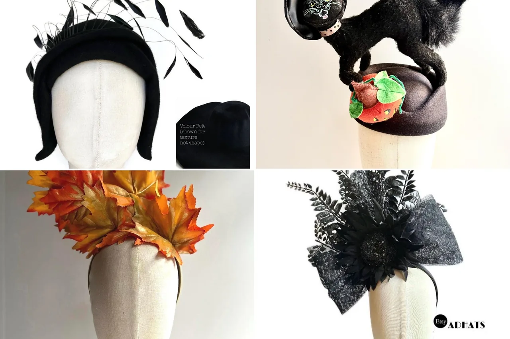
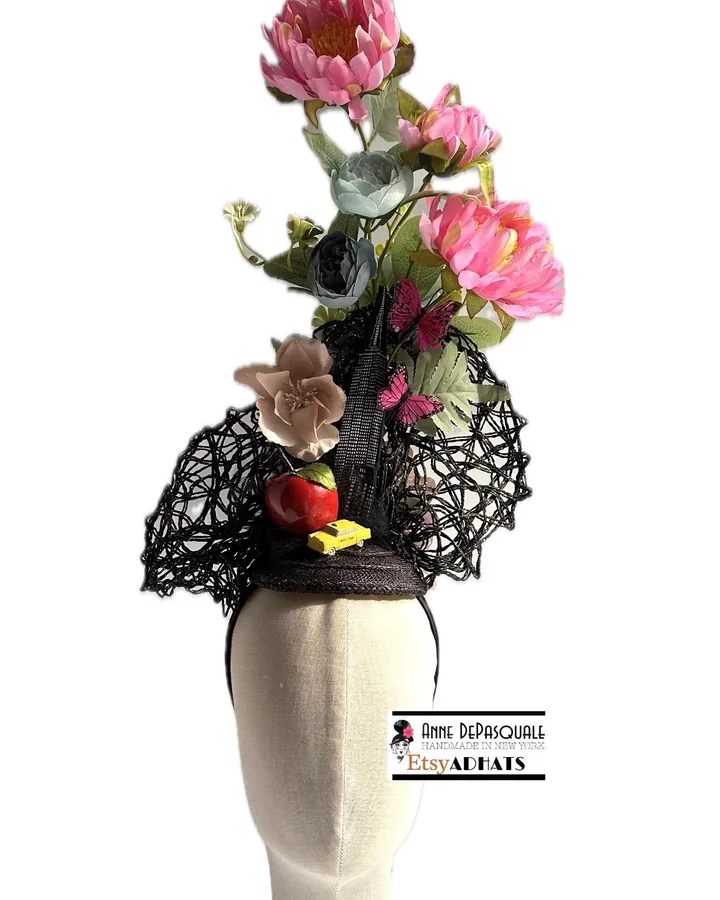
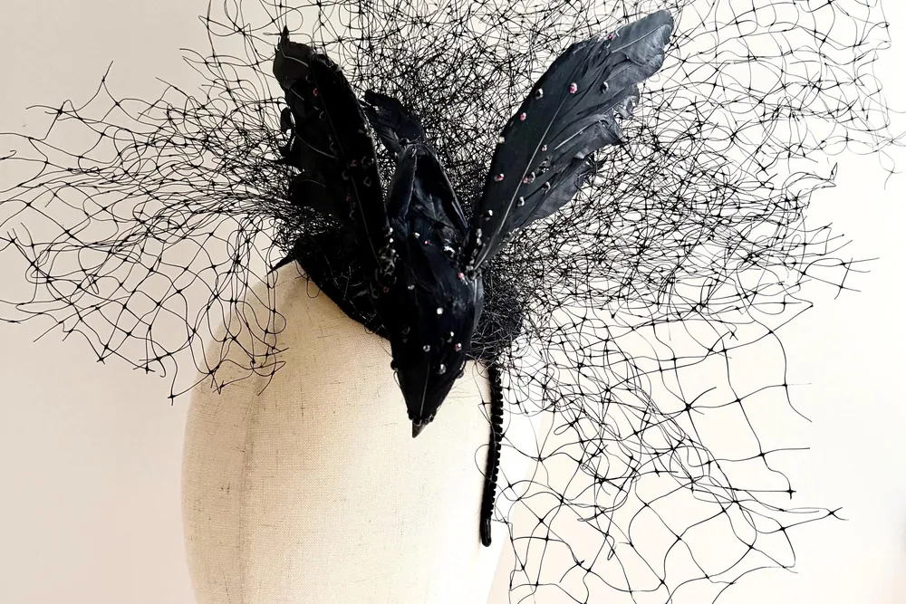
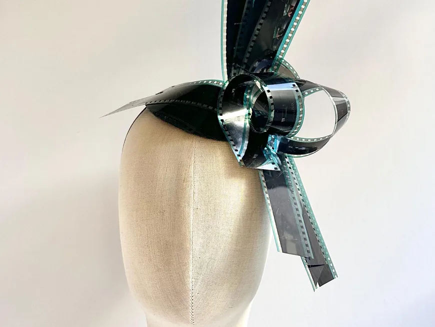
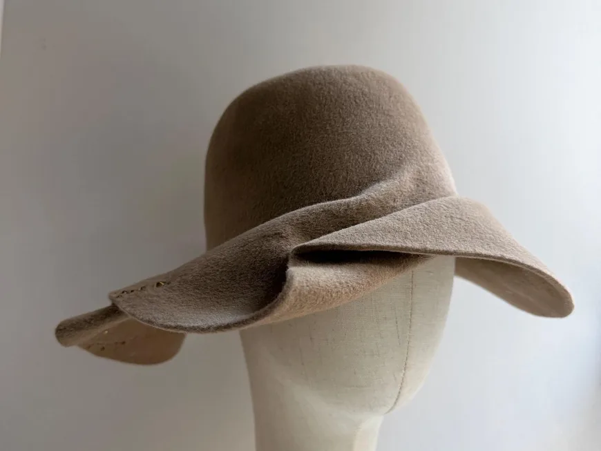
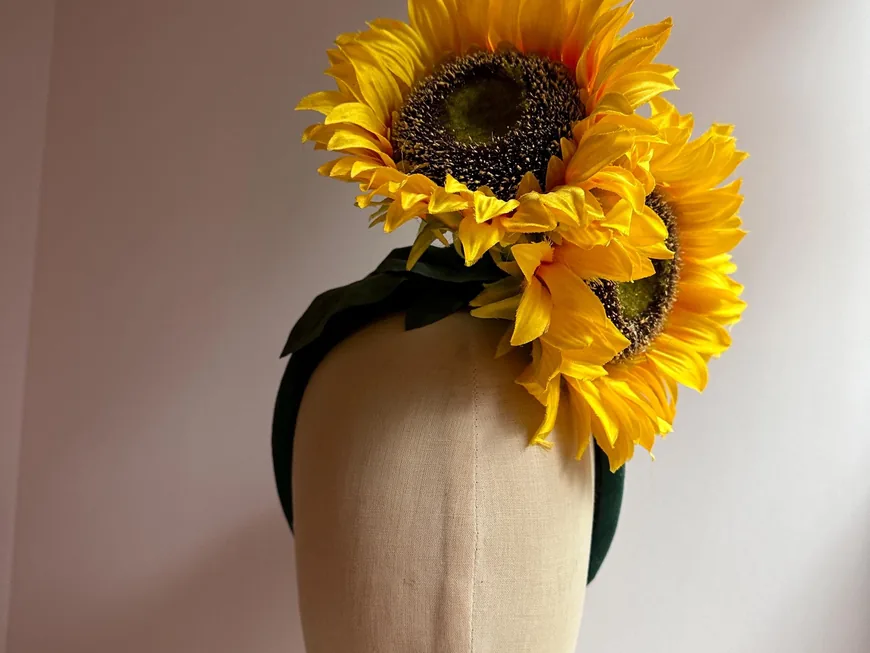
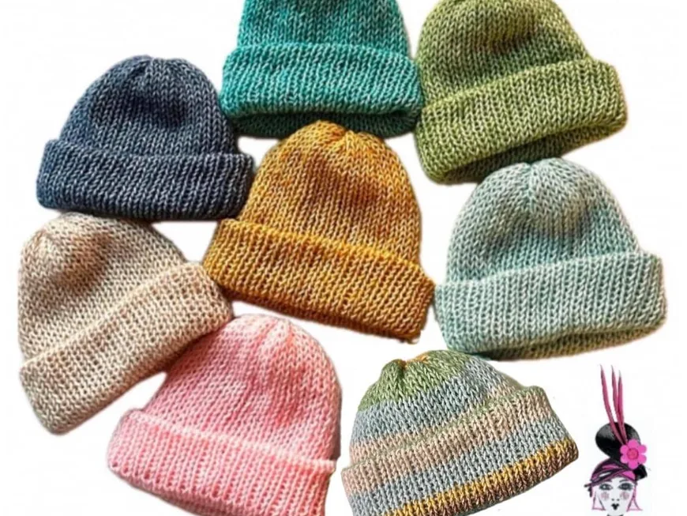

One of a kind
No two pieces alike.

Broadway milliner · New York City
Hand-making delightfully different millinery, pieces that make everyone shine.
Meet the Artist
Owner & artist of Anne DePasquale Millinery
With a BFA in Textile Design from RISD, I create all my designs from a painter’s perspective. For over 25 years I have been hand making hats for Broadway, movies and private clients in NYC.
(M)ADhatter · Hand-making Delightfully Different · Millinery, Accessories, Clothing, Painting · Broadway
Our story

01 How it started
My first jobs in NYC were in fashion: Betsey Johnson, Anna Sui, Donna Karan and Liz Claiborne. Then I took millinery and costume design classes at Parsons, and that is where I found my new creative love.
I started my millinery career in Broadway theatrical millinery, and I’ve made hats for 19 Tony award-winning Best Costume shows, including The Lion King, The King and I, Moulin Rouge and The Cher Show. I designed hats for J.Lo’s collections and her Sweetface runway show, and my fishnet hat, worn by Kate Hudson, was featured in the book Hollywood Pin-Ups.
I still make hats for Broadway, movies, TV and music videos. I even use 35mm film as a material to make hats and accessories. Creating art is my passion. I love it, and I hope you do too!
— Anne
02 Where & how it’s made
Every piece is hand-made and one of a kind. Custom pieces are welcome: bring an idea or a favourite from the shop and we’ll make it yours.

03 What makes it special
No two pieces alike.
25+ years of theatrical millinery.
Made for your look and your event.
Reviews
What we make
Fascinators, hats, whimsical headpieces, masks, clothing and baby knits. Here is what you will find in the shop.

One-of-a-kind fascinators, from film and feathers to Derby horses and NYC taxis.

Hand-sculpted hats, cloches, fedoras, berets and turbans.

Sunflowers, crescent moons, sushi and garlic bread: wearable art for every party.

Masquerade masks, NYC map prints and soft knit baby beanies.
Everything is sold through the online shop, with secure checkout and buyer protection.
Stay in the loop
Sign up to be the first to know about sales and new products.
You’re in! 🎉
Continue to the shopCouture millinery hand-made in New York City. Follow along on Instagram for new pieces and pop-ups!
Visit the shop